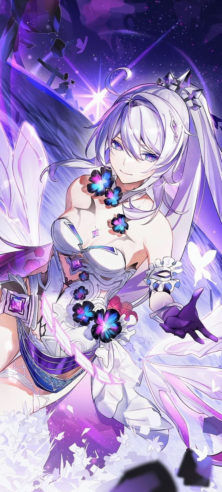

|
|
Elysia is an elegant, cheerful, and sweet lady who's described as someone who "enjoys everything". She likes to flatter Mei for her looks and constantly praises Eden's beauty. Elysia enjoys interacting with people and is very good at it. |
Honkai Energy, Weapon Mastery, Martial Arts, Transformation, magic, Extrasensory Perception, Telepathy, Creation, Self-Sustenance (Types 1, 2 and 3. Mantis soldiers have no need for food or oxygen, and can fight without need for rest), Invulnerability (Her Vipralopa-class Honkai beast genes grant her invulnerable to conventional weapons), Immortality (Type 1 &3), Regeneration, Transformation (All Mantises have a Honkai Active Reaction form), Berserk Mode (Honkai Active Reaction boosts Mantises innumerable strength but also engulf their common sense and consciousness), Acausality (Type 4, Elysia's existence lead to the same consequence in all branched timelines. Her fate cannot be seen by Aponia's prophecy which can forsee the deterministic future "beyond the reality", and exist independent of it), with her SIM in Elysian Realm she has; Spatial Manipulation, Reality Warping, Information Manipulation (As the being the main core of the realm, she can tamper with the data of the Elysian Realm, which is a consciousness space built upon an imaginary number space. As she is the successor of Kevin Killer MK 666, she can completely erase the realm), Abstract Existence (She and other Flame-Chasers are but a data in the realm which physical damage means nothing much to them. Even they are destroyed, they can be back with the data back-up system) |
|
|
Mei is someone with a long history of neglecting her own feelings. Even before her father was arrested, she was used to silently accepting her loneliness within the home. When she went from being the center of attention at school to a "criminal", though, she grew more jaded. She still had a soft heart, but often put her guard up when people approached. This applied even to Kiana Kaslana. |
Superhuman Strength, Superhuman Durability, Superhuman Agility, Superhuman Healing, Even Stronger Electrokinesis, Flight. |
|

|
Kiana Kaslana, or K423, was at first a very boastful, overconfident and "idiotic" girl who took a great liking to food. She was happy-go-lucky, and confident she could do anything she set her mind to. She often smiled, even if she was injured, and adored the company of her friends, whom she showed great affection to. Her happy-go-lucky attitude and her overconfidence often caused her to make reckless decisions without a second thought, especially if it was to save others, even if it meant sacrificing herself. |
Nigh-omnipotence; Superhuman strength; Superhuman durability; Superhuman speed & reflexes; Superhuman stamina; Pyrokinesis; Teleportation. |